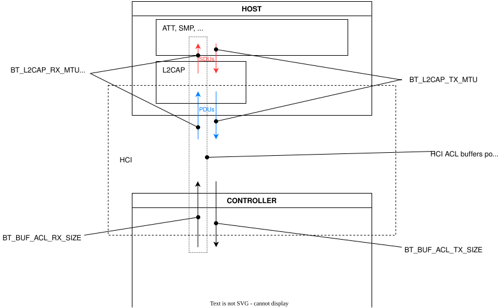

MTU Update
Q&A:
问：要更新 ATT MTU，需要做什么？
CONFIG_BT_L2CAP_TX_MTU 设为至少 xCONFIG_BT_BUF_ACL_RX_SIZE 设为至少 x + L2CAP 头部大小（4 个八位组）。CONFIG_BT_EATT，将 CONFIG_BT_BUF_ACL_RX_SIZE 设为至少 x + L2CAP 头部 + SDU 长度字段长度（6 个八位组）。问：我只想 发送 大数据包，不需要接收大数据包。还需要设置
CONFIG_BT_BUF_ACL_RX_SIZE吗？
答：需要。[1] 蓝牙规范要求 ATT 使用对称的 MTU。
问：我已经增大了 MTU，但数据仍以 27 个八位组为单位发送给控制器。是 MTU 更新没有生效吗？
CONFIG_BT_L2CAP_TX_MTU 设置 L2CAP 层从 ATT 接受的最大 SDU，也就是 MTU 交换时告知对端的值。CONFIG_BT_BUF_ACL_TX_SIZE 设置主机交给控制器的最大 ACL 数据包，默认为所有控制器都必须支持的 27 个八位组。大于该值的 SDU 会被分片到多个 HCI ACL 数据包中，接收端再将它们重组为原始的 L2CAP PDU。对端收到的仍是一个完整大小的通知。CONFIG_BT_BUF_ACL_TX_SIZE 设为至少 MTU 加上 L2CAP 头部大小（4 个八位组），并确保控制器报告的 ACL 数据包长度不小于该值。本示例特意将 CONFIG_BT_BUF_ACL_TX_SIZE 保留为默认值，以便在使用默认数据包大小的同时演示较大的 L2CAP MTU，并能继续与只支持 27 个八位组数据包的控制器配合工作，同时说明 RX 缓冲区大小的要求取决于 L2CAP MTU，而不是 ACL 数据包大小。
概述：
本示例演示两台设备之间交换 MTU，以便发送较大的通知。更新 MTU 可以发送更大的数据包，从而获得更高的吞吐量。
要发送较大的通知，服务器和客户端都需要更新各自的 MTU。MTU 并不是协商出的值，客户端和服务器会交换各自的 MTU 并选取两者中的较小值。因此两端的 MTU 可以设为不同的值，但服务器的 MTU 必须大于或等于客户端的 MTU。
根据蓝牙规范，[2] MTU 是 SDU 的最大大小。不过在 Zephyr 中，可以认为它也代表 PDU 的最大大小，因为在低功耗蓝牙中，[3] 除非使用 L2CAP 动态信道，否则 SDU 不会被分段。用于配置 TX MTU 大小的 Kconfig 符号是 CONFIG_BT_L2CAP_TX_MTU。没有用于更新 RX MTU 大小的 Kconfig 符号，因为 Zephyr 对来自控制器的 ACL RX 缓冲区使用缓冲池。L2CAP RX MTU 定义为 ACL RX 缓冲区的最大大小减去 L2CAP 头部大小。ACL RX 缓冲区的最大大小通过 CONFIG_BT_BUF_ACL_RX_SIZE 配置，最终的 L2CAP RX MTU 就是该 Kconfig 符号的值减去 L2CAP 头部大小。

硬件设置
本示例使用两个应用程序，需要设置两台设备：第一台烧录中心设备应用程序，第二台烧录外围设备应用程序。
由于进行了 RSSI 过滤，两台设备只有在彼此靠近时才会连接。
构建与运行
按如下方式构建并烧录每个应用程序，将 <board> 替换为你的目标开发板：
中心设备（Central）：
west build -b <board> samples/bluetooth/mtu_update/central
west flash
外围设备（Peripheral）：
west build -b <board> samples/bluetooth/mtu_update/peripheral
west flash
详情请参阅 Bluetooth 示例。
如果两台设备距离足够近，中心设备应会连接外围设备，并将自己的 MTU 发送给对方。如果 MTU 交换成功，中心设备应会订阅，然后外围设备会发送一个较大的通知。中心设备收到通知后应立即取消订阅。
两台设备上应得到以下输出：
中心设备（Central）：
*** Booting Zephyr OS build zephyr-v3.2.0-2251-g95d8943c69ce ***
Bluetooth initialized
Scanning successfully started
Device found: R:EB:BF:36:26:42:09 (RSSI -34)
Connected: R:EB:BF:36:26:42:09
mtu_exchange: Current MTU = 23
mtu_exchange: Exchange MTU...
mtu_exchange_cb: MTU exchange successful (247)
[ATTRIBUTE] handle 16
[ATTRIBUTE] handle 17
[ATTRIBUTE] handle 19
[SUBSCRIBED]
[NOTIFICATION] data 0x20004b73 length 100
[UNSUBSCRIBED]
外围设备（Peripheral）：
*** Booting Zephyr OS build zephyr-v3.2.0-2251-g95d8943c69ce ***
Updated MTU: TX: 23 RX: 23 bytes
Updated MTU: TX: 247 RX: 247 bytes
MTU Test Update: notifications enabled
MTU Test Update: notifications disabled
参考资料
See also
- bt_gatt
- bluetooth